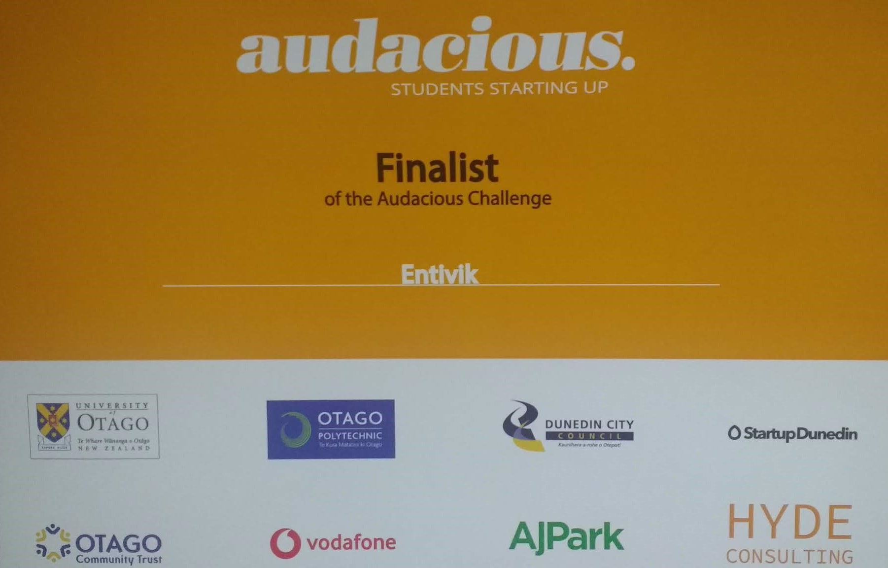

A passionate and diligent developer with over two years of experience
in web-based software development in C# and .NET technologies; educated in India and New Zealand; a technology
enthusiast with a passion for learning and employing new technologies to solve real world business problems through
the design and development of robust information systems
SKILL SUMMARY
Programming Languages : C, C++, C#, Java, Python
Scripting Languages : JavaScript, jQuery, AngularJS, React, Node.js, D3.js
Web Technologies : HTML5, CSS3, SASS
Databases : MS SQL Server 2014, MySQL, MongoDB
Frameworks : MVC, Flask, Django, ORM, JSON and RESTful web services
Tools and Technologies : .NET, Android SDK, iTextSharp, Scrapy and Selenium
Methodology : Scrum
HIGHLIGHTS
1. Proficiency in web-development and app-development using object-oriented design and design patterns
(2+ years of experience)
2. Experienced in all phases of software development (requirements elicitation, design, development, testing
and deployment)
3. Excellent academic record in New Zealand (A grade average)
Portfolio
Projects works
Affordable Care Act (ACA) implementation system
Compliance management system
News app based on location
Photo Upload Application
Timeline
Education and Experiece
Jun 2008 - May 2011
BSC IN COMPUTER SCIENCE
ST. XAVIER’S COLLEGE, MANONMANIAM SUNDARANAR UNIVERSITY, TIRUNELVELI, INDIA.
July 2011 - May 2014
MASTER OF COMPUTER APPLICATION
GANDHIGRAM RURAL INSTITUTE - DEEMED UNIVERSITY, GANDHIGARM, DINDIGUL, INDIA.
Sep 2014 – Jun 2016
TECHNICAL SUPPORT EXECUTIVE,
SOFTCELL TECHNOLOGY, CHENNAI, INDIA
Jul 2016 - Feb 2018
SOFTWARE DEVELOPER
BLUELINES TECHNOLOGY, COCHIN, INDIA
Feb 2018 – Nov 2018
GRADUATE DIPLOMA IN INFORMATION TECHNOLOGY
OTAGO POLYTECHNIC, DUNEDIN, NEW ZEALAND
Nov 2018 - Present
JUNIOR SOFTWARE ENGINEER
2ZELEX LIMITED (HAPPYMOOSE), DUNEDIN, NEW ZEALAND
Affordable Care Act (ACA) implementation system
This project aimed to automate the ACA (or Obamacare) health reporting service for a US-based client.
In this project, the administrator can manage all the details of medical plans of clients and their employees.
Each employee and their dependents are assigned to a medical plan according to their eligibility. The reporting
module generates different ACA reports of single or multiple employees or for the entire company which
includes details such the type of health cover they have and the duration of the cover (monthly or yearly
health cover)
Technologies used: ASP.NET, jQuery, MS SQL SERVER 2014
Compliance management system
This is a CRM application which manages activities between various stakeholders (three of them – administrators,
brokers and employers). The goal of the system is to enable compliance specialists (administrators) to
examine the plan documentation of the health and welfare benefit programs currently in place and recommend
all appropriate revisions to ensure full compliance for an employer. The administrator of the system can
add and view details about Brokers (who can offer a set of compliance services that can be provided to
certain organizations).
Technologies used: ASP.NET, MVC 5, jQuery, AJAX, MS SQL SERVER 2014
Whats happenning there?
News android app to fetch news for a location using API based on the user location or location chosen
from map
Technologies used: Android studio and News APIs
Visualization
This project is a client-server application. The server develeoped using Django framework stores the uploaded
photos and provides an API for react native client. The mobile application developed using React Native
is the client that allows the user to select photos from their mobile phone and uploads it to server. To
run the project please see the instructions given below the screenshots
Technologies used: React Native and Djaongo
Volunteering
Mosgiel community centre .
As a part of professional development, Mark and I visited Mosgiel community centre on 24/10/2018. It was
an interesting experience for me. We met with some elderly people and answered their questions related
to the new computing devices (phones and laptops) they are using. They were all senior citizens, but are
new to the technology domain. They were really intimidated by small things such as getting promotional
mails and getting notification like back up your data. They weren’t sure why they are receiving such emails
and were unsure about what to do when they receive messages about backing up data. Also, for saving of
passwords on browsers they were worried whether someone else may have access to their data or steal their
data. I taught an elderly woman about options available in mobile phone applications and how to explore
the options available on any mobile app. She wanted to know about Netflix app, mail app (and details such
as what is spam email, stared email , deleting an email, what is trash). I provided explanation on the
above mentioned items. I also taught her how to check the available mobile data and the previous month’s
mobile bills in Vodafone app. It was an eye-opening experience for me to see the kind of technological
problems faced by the elderly. It made me realise that as a software developer I need to think carefully
to create better user interface in the applications I develop so that everyone (including novice users)
can easily understand the functionality of an app and easily navigate through the application. The user
interface needs to be simple and intuitive. Also, I realise that I will need to be patient when interacting
with people. This will be beneficial for me when operating in a team-setting where people may have different
levels of understanding about technology. I also saw the difference in mindsets between young people (like
me) and the elderly in trusting technology. Young ones trust technology more than they should and the elderly
are too worried. Perhaps, the reality might be somewhere in the middle
Start-up weekend
I attended the start up weekend held between X and Y. It was a three-day event which started on a Friday
evening and ended on Sunday evening. I participated as a Developer in this event. On the first day several
people made pitches of their ideas and then everyone voted for their favourite project.
Most of the ideas that were pitched were really interesting. I liked ‘nearby offers’ app which
aims to push offer notification based on location. For example, if a pizza company like Dominoes wants
to provide an offer, it might send offers to people within a certain radius of a particular store. This
way, they can encourage people to buy their products more. I also liked the idea that focussed on preparing
food for the dogs and selling them (which is not relevant to the ICT area).
I decided to join an idea proposed by Abdullah. He is a civil engineer in a construction company
in Dunedin. His idea was developing a mobile application for ‘clock in’ system based on geo-location. This
app aims to identify whether the user is in a construction zone and also computes how long the user has
been in the zone. Based on this information, the payroll of the user can be computed. I liked this idea
and I joined that group. Our group comprised of five members. The team members were Abdullah, Chris, Kezz,
Aaron and myself.
Aaron and I worked on application development and the other three worked on the business development.
On Friday night we did the requirement analysis first and other guys are worked on making business models.
When I attended this event, I was at the initial stage of my android course. It helped me with
starting up the project. I learned about location and access permission APIs in android and also the async
method. Initially it was hard for me to work on this project because I was new to the android platform.
However, I was able to make very good progress at the end of Saturday by creating an initial version of
the mobile application which can identify the current location of the user and also checks if the location
is within a site’s location.
While I worked on the app, Aaron worked on the database side and developed back-end API which could
be used from the app. I completed the app by mid-day of Sunday. I didn’t concentrate on validation and
UI design due to time constraints. I concentrated only on the core feature which allowed the user to clock
in when they are inside the construction location. The app records the clock in and clock out time in the
database.
Before the end of the event, we had a working system (after several mini-iterations of fixing bugs).
We were the only group to have a working application. Some screenshots from this application and some sample
code are given below.
While Aaron and I worked on the implementation of the app, the other group members worked on business
models and elicited detailed requirements from the real workers from the construction department. This
formed the inputs for subsequent refinement which we pursued outside this event later on.
At the end of the start-up weekend we gave a presentation about our business idea and the mobile
application that was developed. Our presentation was well-received. Now, this idea is being developed further
and I have asked to contribute to this start up project which is being funded by the construction company.
I really enjoyed the whole event and I learnt about how to convert an idea into a business. I learned
different stages in starting up a business. I am also thrilled that I could put my skills and knowledge
into practice towards developing a useful application for a business. Additionally, this event provided
opportunity for me to work with different people focussing on different aspects of business (not just technology
people). I learnt that it is not just technology that makes an idea successful. We need passionate entrepreneurs,
venture capitalists who fund the project, project managers, marketers etc. Overall, this was a beneficial
learning experience for me. Also, I look forward to the commercialization of this project.
Audacious
I am working on a React Native which will be used by workers in construction domain for various purposes including GPS based clock-in/clock-out system (to log the check-in time at construction site), autonomous timesheet management, generating pay slip reports and to check day-to-day work schedules.
Our team menbers are Abdullah, Aaron, Hendry and myself.

We later had the final presentations where we were finalists.
Diversity workshop
Why to talk with people who disagree with us?
When we hear about the thoughts of people who disagree with our thoughts, we learn many things
from that. Even our decisions may change after the conversation. It may be good in some point. So, we should
not ignore the negative commands. we should consider other people’s thoughts that may help to take better
decisions.
I learnt how decision making may change if we talk to the people who disagree with our thoughts
rather than ignoring it.
Cultivate intellectual humility
It talks about how our mindset should be. People who have got growth mindset will learn from their
mistakes. They take everything as chance to progress and learn from it. They always think positive about
themselves, happily accept the challenges. But people who have fixed mindset resist changes in their life.
They wouldn’t like to take new challenges. They are not ready to learn.
I learnt that, being in growth mindset will make me grow higher and give confidence.
Explore the irrational mind
The content provided talks about people with automatic thinking and deliberate reasoning
We should not take decisions by considering only our situations. Whenever we make decisions we
need to think about others’ opinions and should take decisions.
Break free from moral matrix
There are six moral values: Care, Fairness, Loyalty, Authority and Sanctity. People will behave
in a situation based on these moral values. We need to understand others’ point of view before judging
them. Everyone can have different view on different things. We need to put ourselves in other’s shoes to
understand things from their point of view.
Prepare for constructive disagreement
In this workshop I learnt that if somebody says that we are not correct, we need not consider this
as a disagreement. We can learn from others point of view. It also does not mean that we have to accept
that what we did was wrong. On the other hand, we need to try to understand the point and try to see what
we can learn from their feedback and have a positive mindset.
My final thoughts:
The whole workshop material talks about how our mind set actually is and how we need to change
it. It explained that we can learn from our mistakes and we need to treat people with different attitudes/mindsets/beliefs
with respect. Also, we need to understand other peoples’ thoughts. The differences could be because of
cultural and moral diversities. If we consider those, there is will be less misunderstanding and more unity
in this world. This may lead to less problems in the society. This workshop helped me to learn about how
to become a “better me”.